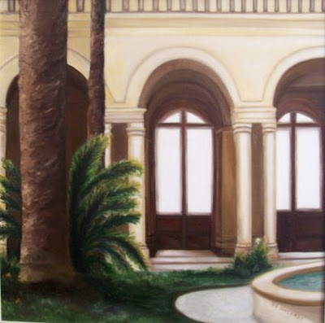
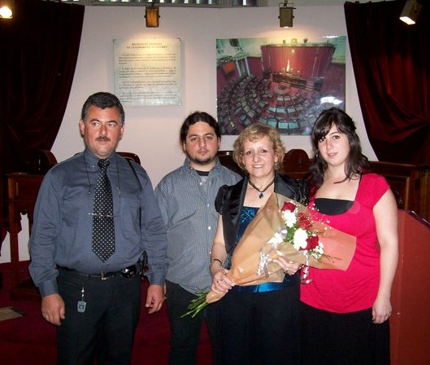

Ida De Vicenzo
Mi historia no es diferente a la de otros inmigrantes,
pero a la vez es única. Tiene sus matices: una vida que me introdujo en el trabajo y la nostalgia,
desde muy temprana eda;, pero, hace pocos años la pintura fue un disparador
para expresar mis emociones y sentimientos.
Desde mi posición animo a
las personas, que se " lancen" hacer algo que les guste, les digo "hay que
intentarlo" , abrir nuestras mentes a conocimientos que nos pueden enriquecer,
conectarnos con nuestros sueños y llevarlos a la acción.
En un momento de mi vida me sentía perdida, porque uno es hija, madre,
esposa, trabajadora, etc. Sentía que me faltaba algo. En esa búsqueda de
mi esencia, me encontré en la pintura y al poco tiempo en el lugar donde nací
Cropalati (Italia) fue un ir y reconocer dónde mi vida había comenzado.
Fue un despertar, después una necesidad espiritual pintar sus paisajes. No fue nada premeditado
es un camino que se va armando como lo voy transitando, hago lo que siento
y eso genera una respuesta..
Me siento privilegiada, soy de dos lugares,
Italia y Argentina. No obstante, siento la necesidad imperiosa de conservar las costumbres
calabresas, y a la vez me siento Argentina. "Sumo", a que Argentina nos cobijó en un
momento muy triste de nuestras vidas.
Voy sin prisa, me obligo a clarificar el hecho de "aprender", desde distintas miradas; sin saltear una escala de valores. No dejo que el materialismo adormezca lo que es important;, trato en la vida y en mi obra seguir una coherencia, que sea parte de un todo.
Algunas veces la imagen queda guardada por largo tiempo, espero tener la necesidad de pintarla; voy despacio y me tomo mi tiempo para hacerla.
Cada día es algo especial. De cada religión o disciplina tomo lo que me hace bien, todas se complementan , buscan sacar lo mejor de cada persona.
La vida me dejó marcas que no se pueden borrar: momentos difíciles; personas muy queridas que ya no están, aunque siempre permanecerán en mi corazón; grandes carencias, pruebas... sin embargo, también momentos felices que no pueden volver. Podría hacer una gran lista con todos ellos, pero unas de la más importantes,, es la convicción que con trabajo y esfuerzo , algunas veces se pueden modificar las cosas más adversas.
Admiro la fortaleza y el coraje de mi familia, que como tantos otros llegaron " con una mano atrás y otra adelante" y con esfuerzo y trabajo se labraron un porvenir para sus hijos, al comenzar una nueva vida en una tierra tan lejana.
Cada persona que conocemos, siempre nos deja algo, positivo o negativo, pero todo eso, nos ayuda de alguna forma "Ser " lo que somos , a veces nos muestra lo que no queremos ser y otras a mejorar , a "humanizarnos "
Trato de colaborar con la comunidad , pienso que entre todos podemos hacer un lugar mejor.
El Amor: ¡¡¡Qué grande!!!, hay historias de amores y desamores como en cualquier
familia, que me sorprendieron y que me llevaron a la curiosidad. En forma particular,
les puedo contar que con mi marido, estamos casados hace 33 años; tenemos dos hijos
Pablo y Andrea. Las vicisitudes de la vida nos sirvieron para complementarnos y nos unieron más. Para logarlo, es necesario dejar de lado las cuestiones personales. Pienso que es una forma de vida.
Uno demuestra el amor a cada día, cada instante. Algunas veces hasta un pequeño gesto,
una palabra amable a alguien desconocido, puede ser un acto de amor.
Trato de alcanzar independencia respecto de los otros, sin pensar en las modas o lo que los demás piensen , ser fiel a mis sentimientos.
Otra mirada de esta historia (Ver)

"Patio de las palmeras", pintura al óleo 50 x 50

Ida con gente de su pueblo natal en Italia

Ida con su familia